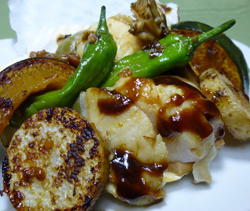

ホタテと野菜の田楽グリル
- 調理時間：40 分
- （一人当たり）
- カロリー：247kcal
- たんぱく質：13.9g
- 脂質：3.5g
- 塩分：3.1g

＜４人分＞
- ホタテ
- 200g
- しし唐
- 8本
- マイタケ
- 1/2パック
- 長芋
- 10cm位
- カボチャ
- 200g
田楽みそ（赤）
- ・赤味噌
- 100g
- ・三温糖
- 50g
- ・酒
- 10cc
- ・みりん
- 大さじ2
- ・だし汁
- 大さじ2

- ホタテは下ゆでする。
- マイタケは石づきをとり、手で適当にさく。長芋は１ｃｍ幅の輪切りにする。カボチャは食べやすい大きさに切る。しし唐は包丁の先で切り目を入れておく。
- ②をフライパンでサッと炒め、塩、コショウで軽く下味をつける。
- 田楽みそをつくる。
小鍋に田楽みその材料を合わせ、弱火でじっくりと練り合わせ練りみそをつくる。 - 器に野菜とホタテを盛り付け、田楽みそをふりかけ、オーブンで焦げ目がつく程度に焼く。
ホタテと野菜の田楽グリル
残暑厳しい今日この頃、夕方の風に秋の気配を感じます。確実に秋がすぐそばにやってきているようです。夏から秋へ季節が変わるこの時期は夏の疲れをとる食事を意識しましょう。
メイン食材のホタテ貝は、低脂肪で良質のたんぱく源となります。夏バテ対策にはもってこいの食材です。
私たちの体を分解すると、約６０％が水分です。そして水分を除いた約半分がたんぱく質から成り立っています。たんぱく質のはたらきは、骨格筋や臓器など体を構成し、酵素やホルモン、神経伝達物質の原料となり、ヘモグロビンのように血液を輸送したり、実に多岐にわたります。
夏は食べやすいめん類に偏りがちですが、おかずも忘れず食卓に。